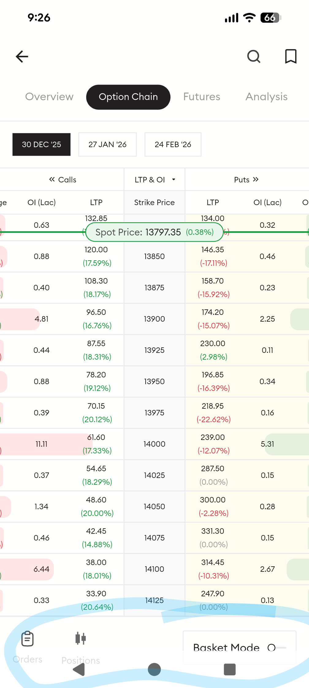
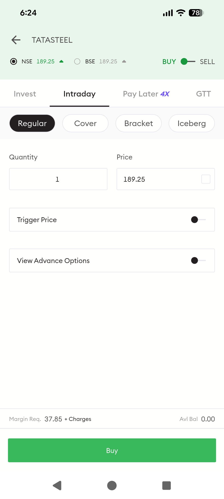
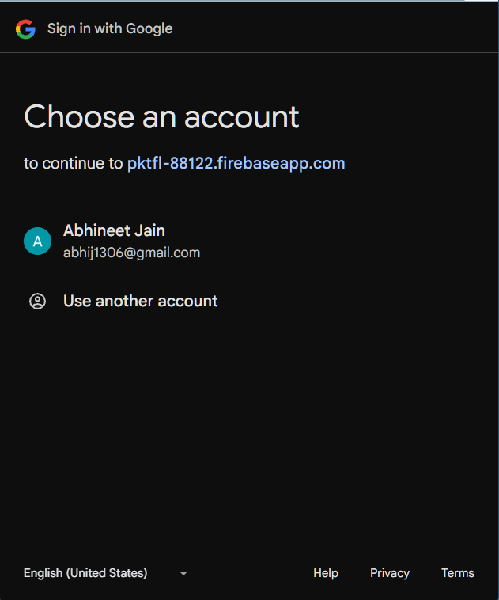

USABILITY & PERFORMANCE AUDIT
Technical Flaw Analysis.
Extracted from a deep-dive evaluation of the trader journey, identifying trust leaks and performance bottlenecks.
01
Medium–High Severity
Generic Error Messaging on Technical Data
Observed: Vague "Something went wrong! Internal
Server Error" message on Technicals tab.
Impact: Breaks trust in platform reliability;
user unsure whether to retry or abandon.
Root Cause (Likely): Missing data for
instrument not differentiated from global failure; lack of contextual fallbacks.

02
High Severity
UI Hierarchy Breakdown in Options Trading
Observed: Global navbar remains visible,
interfering with expiry filters and Buy/Sell actions.
Impact: Clutters high-cognitive-load screens;
reduces intentionality of trade actions.
Root Cause (Likely): Lack of semantic zoning
for high-focus, execution-oriented trading screens.

03
High Severity
Cold Start Lag on High-Speed Devices
Observed: Significant launch delay (vs peers)
even on flagship devices and fast fiber networks.
Impact: Poor first-load experience; erodes
confidence in app responsiveness.
Root Cause (Likely): Cold-start hydration
blocks rendering; backend tightly coupled to UI load.
Performance Bottleneck
04
Medium–High Severity
Margin Field Flicker Without Loading State
Observed: "Margin Required" field briefly flashes
empty (--) when switching to Intraday tab.
Impact: Creates doubt about funding; delays or
interrupts high-speed trades.
Root Cause (Likely): Async margin
calculation not handled with graceful placeholder or skeleton UI.

05
High Severity
Inconsistent Order Lifecycle & Cancel UX
Observed: Orders allowed despite ₹0 balance;
inconsistent terms (AMO) and button locations.
Impact: False sense of success; confuses new
traders; breaks interaction flow.
Root Cause (Likely): Lack of upfront
validation and educational tooling; modal inconsistencies.

06
Medium Severity
Brand & Trust Leakage in Authentication
Observed: Redirects to generic Firebase domain
(`pktfl-88122.firebaseapp.com`) during Google sign-in.
Impact: Reduces trust during high-sensitivity
moments; makes flow feel abrupt.
Solution: Implement branded OAuth consent
flow with custom domains and scope descriptions.

Strategic Gap Analysis
Trust Gap
Evidenced by Flaws #1, #5, and #6. Resulting in user hesitation to commit significant capital due to execution anxiety.
Clarity Gap
Evidenced by Flaws #2, #3, and #4. Resulting in drop-offs during complex high-cognitive-load workflows.
Resilience Gap
Inconsistent handling of cold-starts and marginal network conditions where market leaders (Zerodha/Groww) remain robust.